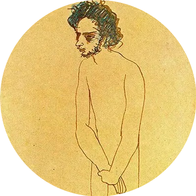

PhD Candidate in Cognitive Psychology
Researching the neurophenomenology of embodied states of consciousness using VR and electrophysiology. Supervisor: Prof. Bigna Lenggenhager.
PhD Candidate in Cognitive Psychology
Researching embodiment, altered states of consciousness, virtual reality, and neurophenomenology at the University of Konstanz. Coordinator of the ALIUS Research Group.

I am a neuropsychologist and PhD candidate at the University of Konstanz, where I investigate the neurophenomenology of embodied states of consciousness under the supervision of Prof. Bigna Lenggenhager. My research combines cutting-edge Virtual Reality technologies with electrophysiology and neuroimaging to understand altered states of consciousness, multisensory integration, and the effects of psychedelic substances. As Coordinator of the ALIUS Research Group, I facilitate international collaboration in consciousness research, organize journal clubs, and edit annual research bulletins. My work bridges rigorous experimental neuroscience with phenomenological approaches to consciousness, exploring questions at the frontiers of human experience.
Researching the neurophenomenology of embodied states of consciousness using VR and electrophysiology. Supervisor: Prof. Bigna Lenggenhager.
Overseeing collaborations, writing and editing annual research bulletins, and organizing journal clubs on consciousness and psychedelics research.
Conducting research with Virtual Reality and electrophysiology while teaching undergraduate courses in cognitive psychology.
Worked at the Religion Cognition & Behavior Lab under Prof. Michiel van Elk, focusing on the intersection of cognition, religion, and altered states.
Master's thesis on the effects of psilocybin microdosing. GPA: 8.2/10. Supervisors: Prof. Michiel van Elk and Dr. Erik van der Burg.
PhD research investigating embodied states of consciousness using Virtual Reality and electrophysiology. Exploring how immersive VR experiences affect self-perception, body ownership, and conscious experience through multimodal neuroimaging.
Preregistered field and lab-based studies examining the effects of psilocybin microdosing on aesthetic experiences, emotion processing, creativity, and multisensory perception. Published in Psychopharmacology and Journal of Psychopharmacology.
Leading international collaboration network for consciousness research. Overseeing research bulletins, organizing journal clubs, and facilitating interdisciplinary dialogue on altered states of consciousness and psychedelic science.
Investigating audiovisual speech perception and temporal binding windows in altered states. Using Unity-based VR paradigms combined with EEG to explore how consciousness modulates sensory integration processes.
de Vries, E., Fejer, G., & van Ede, F. Investigated the relationship between spatial and temporal organization in working memory, challenging traditional resource allocation models.
Bahi, C., Irrmischer, M., Franken, K. et al. Examined how breathwork practices influence brain activity patterns, mood states, and consciousness in healthy adults using EEG.
Marschall, J., Fejer, G., Lempe, P. et al. Preregistered field and lab-based study finding no significant effects of psilocybin microdosing on emotion-related symptoms and processing.
van Elk, M., Fejer, G., Lempe, P. et al. Combined field study and controlled lab experiment investigating how microdosing affects subjective experiences of awe and aesthetic appreciation.
Prochazkova, L., van Elk, M., Marschall, J., Rifkin, B. D., Fejer, G. et al. Comprehensive analysis of microdosing effects on creative performance across multiple methodological approaches.
Berlin, Germany
Interested in collaboration, research inquiries, or speaking engagements? I am open to discussing innovative approaches in consciousness research, VR applications, and psychedelics science.